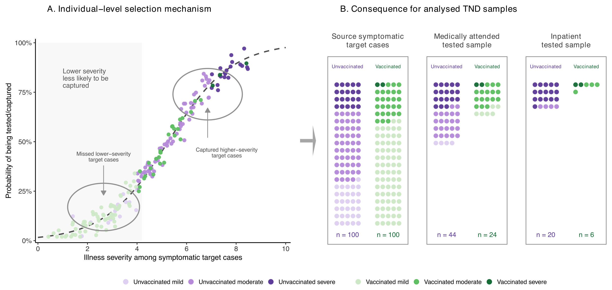
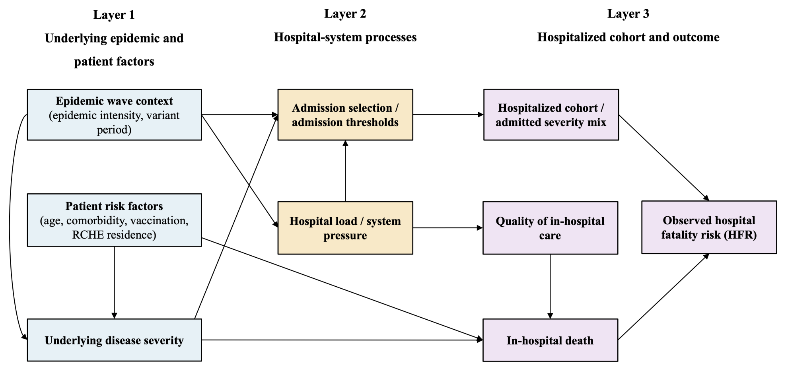
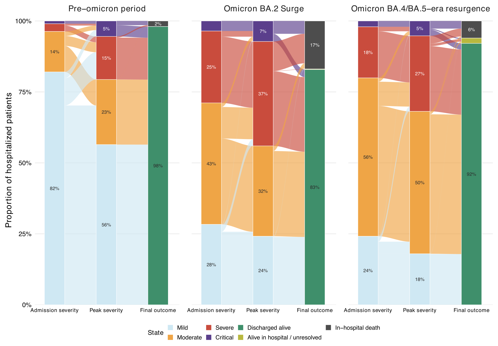

Research
My research focuses on developing and applying causal inference methods for observational health data, with the goal of improving causal validity and reducing bias in evidence used for clinical decision-making.
My doctoral research examines how study design, causal estimands, and selection mechanisms shape evidence on vaccine effectiveness and disease severity. I work with population-based surveillance and linked hospital data, alongside simulation studies and evidence synthesis.
I am especially interested in questions where the population selected for analysis, the endpoint definition, or the timing of exposure changes what an estimate means.
Research interests
Methodology
Causal inference; causal estimands; bias analysis and correction; selection bias; survival analysis; longitudinal data analysis; missing-data methods; and target trial emulation.
Applications
Observational studies using electronic health records, registries, cohorts, and hospital data; vaccine and therapeutic evaluation; and comparative effectiveness and safety.
Causal estimands and test-negative designs
Vaccine-induced severity attenuation and bias in test-negative estimates
Lead-author methods manuscript in preparation
Key methods: Monte Carlo simulation · inverse-probability weighting · analytical bias derivation · sensitivity analysis
Test-negative studies condition analyses on people who seek care and receive testing. If an intervention also changes symptom severity, care seeking, or the probability of entering the study, this conditioning can change the target population and the causal quantity being estimated.
My current methodological work formalizes this problem through causal estimands and selection mechanisms. I use simulation studies to assess the magnitude and direction of bias and to evaluate correction approaches under alternative data-generating processes.

Hospital-based test-negative designs for vaccine effectiveness against hospitalization
Simulation study in progress
Key methods: Monte Carlo simulation · trial–cohort–TND comparison · estimator performance evaluation · sensitivity analysis
An ongoing simulation study examines when hospital-based test-negative design estimates of vaccine effectiveness against hospitalization target the same causal quantity as randomized trial and cohort estimates. Using a shared simulated source population, I separate hospital eligibility and admission, testing and capture, and control-illness composition to identify mechanisms through which estimates diverge across study designs.
Hospital pressure, admission selection, and COVID-19 hospital fatality risk across epidemic periods
Lead-author methods manuscript in preparation
Key methods: Generalised additive models · marginal standardisation · decomposition analysis · sensitivity analysis
Building on the linked cohort, this project examines hospital fatality risk as a context-dependent outcome among a selected hospitalised population. It evaluates how admission thresholds, patient risk factors, admission severity mix, and hospital-system pressure shape both entry into the hospitalised denominator and mortality after admission.
I use weekly hospital-system summaries, wave-specific generalised additive models, standardised predictions, and counterfactual standardisation to assess how differences in admission severity mix and hospital load contributed to the hospital fatality risk contrast between Hong Kong's fifth and sixth epidemic waves.

COVID-19 severity and in-hospital progression using linked health records
Included in doctoral thesis
Key methods: Bayesian modelling · longitudinal data analysis · Aalen-Johansen estimation · Cox regression
I use linked population-level COVID-19 surveillance and Hospital Authority clinical records in Hong Kong to estimate case hospitalisation risk, hospital fatality risk, and case fatality risk across epidemic waves. I also reconstruct admission severity, peak severity, fixed-time hospital states, critical-care progression, discharge, and in-hospital death.
The analyses combine Bayesian severity-pyramid modelling with longitudinal hospital-state summaries, Aalen-Johansen competing-risk estimation, and Cox regression to separate healthcare burden from clinically comparable severity and characterise progression after hospital admission.

Vaccine effectiveness and epidemiological evidence synthesis
Published peer-reviewed papers · First/co-first author
Key methods — evidence synthesis: Multilevel random-effects meta-analysis · meta-regression · Monte Carlo uncertainty analysis · risk-of-bias assessment
Key methods — fractional-dose modelling: Dose-response modelling · generalised least squares · uncertainty propagation · sensitivity analysis
My evidence-synthesis work includes systematic reviews and meta-analyses of vaccine-associated attenuation of disease severity, SARS-CoV-2 variant transmissibility, and superspreading. I have also used neutralising-antibody data and immune-correlate models to evaluate the potential efficacy of fractional COVID-19 vaccine doses.
Across this work, I examine how differences in endpoint definitions, study populations, and study design contribute to heterogeneity and affect interpretation across evidence sources.